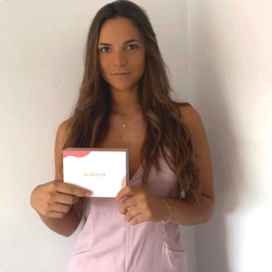

Creemos:
Que la búsqueda de la mejora constante nace del amor propio y no desde la perfección.
No buscamos una piel
perfecta.
Buscamos la mejor
versión de
una piel real.

Creemos:
Que la búsqueda de la mejora constante nace del amor propio y no desde la perfección.
No buscamos una piel perfecta. Buscamos la mejor versión de una piel real.
